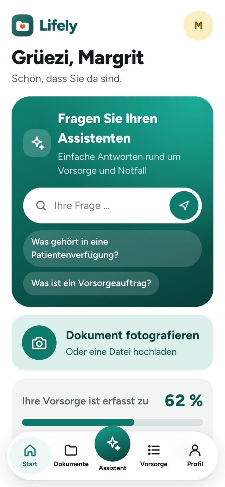
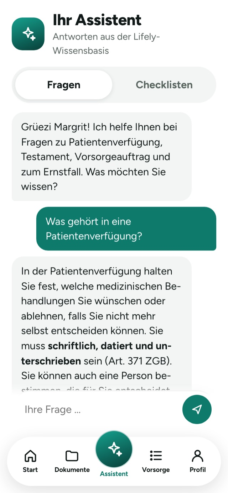
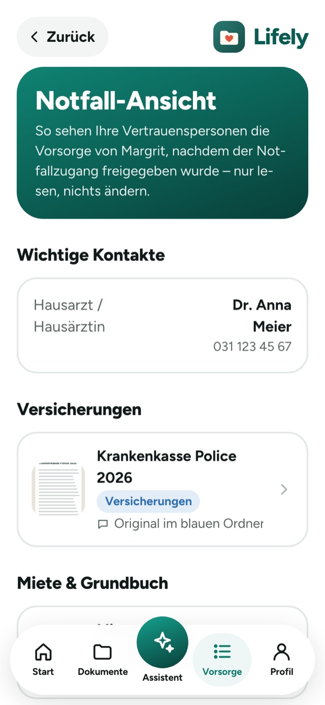
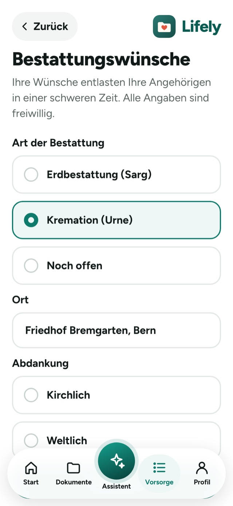
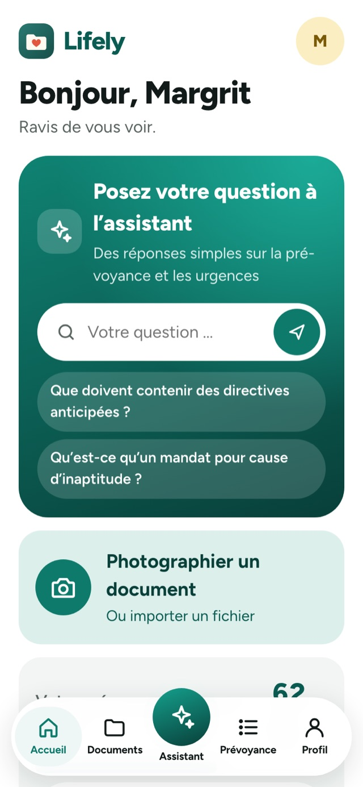
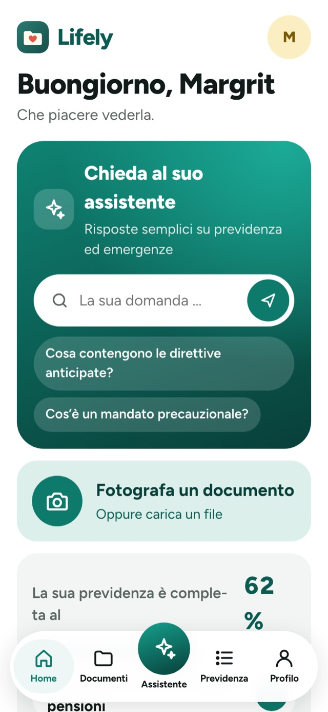
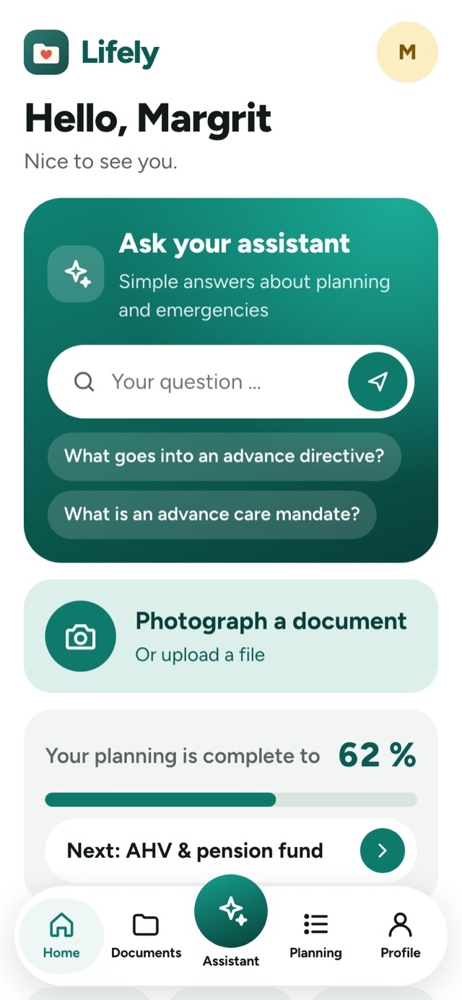

Fotografieren
Blatt auf den Tisch, Foto machen, Kategorie wählen. Eine Notiz sagt, wo das Original liegt.
Lifely ist Ihr digitaler Vorsorgeordner. Fotografieren Sie Policen, Verträge und Vollmachten, halten Sie Ihre Wünsche fest – und im Ernstfall findet Ihre Familie sofort, was sie braucht.



Warum Lifely
Im Ernstfall zählt jede Stunde. Doch die Police liegt im Ordner, das Testament beim Notar, und die Abos hat niemand aufgeschrieben. Lifely bringt alles an einen Ort – damit Ihre Familie nicht suchen muss.
Drei Schritte – und Ihre Vorsorge ist geordnet.
Blatt auf den Tisch, Foto machen, Kategorie wählen. Eine Notiz sagt, wo das Original liegt.
Verträge, Banken, Kontakte und Wünsche erfassen. Lifely zeigt, was noch fehlt.
Vertrauenspersonen bestimmen. Im Notfall sehen sie alles – und nur dann.
Versicherungen, AHV, Steuern, Gesundheit, Vollmachten: Jedes Dokument hat seinen Platz. Fotos werden automatisch verkleinert, PDFs gehen auch.
Was gehört in eine Patientenverfügung? Wie schreibe ich ein gültiges Testament? Einfache Antworten zum Schweizer Recht – ohne Fachchinesisch.
Bestattung, Abdankung, wer die Katze füttert und wo der Ersatzschlüssel liegt: Lifely hält fest, was sonst nur in Ihrem Kopf ist.

Hausarzt, Dokumente, Wünsche und Kontakte auf einen Blick – nur lesen, nichts ändern. Dazu eine Checkliste: Was ist im Ernstfall zu tun?
Die Übersicht zeigt, wie vollständig Ihre Vorsorge ist.
Jährlich oder alle 2 Jahre – Sie bestimmen.
Deutsch, Français, English, Italiano.
Drei Schriftgrössen, grosse Knöpfe, klare Kontraste.
Lifely fragt nie nach PINs oder Zugangsdaten. Nur, wo Konten sind.



Wir entwickeln Lifely im Rahmen einer Projektarbeit an der Berner Fachhochschule BFH. Erzählen Sie uns, wie Sie vorsorgen – und was Ihnen im Ernstfall geholfen hätte.
Ein digitaler Vorsorgeordner. Sie legen wichtige Dokumente, Verträge und persönliche Wünsche an einem Ort ab und bestimmen Vertrauenspersonen, die im Ernstfall Zugriff erhalten.
Nein. Lifely ist ein Prototyp aus einer Projektarbeit an der Berner Fachhochschule BFH. Sie können die App ausprobieren – bitte nur mit Testdokumenten.
Im Prototyp bleiben alle Dokumente und Angaben nur im Browser auf Ihrem Gerät. Es gibt keine Cloud und keinen Server – niemand sonst sieht Ihre Unterlagen.
Der Prototyp ist kostenlos und ohne Werbung. Ob und was eine spätere Version kosten soll, möchten wir in der Umfrage herausfinden.
Nein. Lifely läuft im Browser auf Handy, Tablet und Computer. Auf dem Handy können Sie die App zum Startbildschirm hinzufügen.
Probieren Sie Lifely aus – kostenlos, im Browser, in einer Minute eingerichtet.